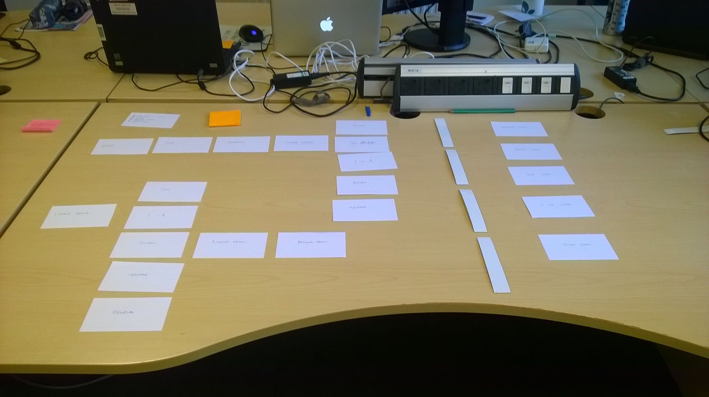

Title
27 Mar 2017
Online transactions are now common place, providing opertunaties for organisations to re-design legacy paper based forms. As well as oprtunaty this can also come with pressure. Paper forms do have some advantages over there digital replacemcents.
-
They can be read from begining to end alowing users to uderstand exactly what isexcpected of them before begingin.
-
They can be re-visited and or part completed alowing for users to gather information they may not have had to hand, without a complex save and return or pssword feature
-
They can be edited and filled out in the order of the users choosing
For all of these reaons and more the stucture and question sequence of online form is hugley important. Getting it right can create a trusting un obstructive user experience. Getting it wrong can have a damaging effect on the relationship with the user.
So, how should you structure the form?
A well-thought-out form should flow naturally in the same way that a conversation would. Each new question put to the user should relate to the information they've already provided and progress in logical steps. The form should also flow from topic to topic, not jump sporadically from service choices to requests for user information.
In most cases a form can be split into two topics:
- The service - options relating to the service the user requires, for example length of licence or
- The user - information about the user required either by the organisation or to identify available products, permits or licences, for example date of birth or address
So which should come first: the user or the service?
Service first
In user-centred design the user and their needs should always come first, therefore the form should aim to focus on the users' end goal. Any additional questions should come at the end.

There are many benefits to this approach, including:
- Addressing the needs of the user before that of the organisation
- Opening the form with expected questions, making it quick and easy for experienced or return users to complete
- Creating a simplified journey by asking only the questions required for the selected product
However there are also some drawbacks to opening the form with product related questions:
- We lose the opportunity to provide guidance for new or inexperienced users
- Users may be making ill-informed decisions
- Users could be presented with options they are not eligible for
"I don't know which licence is right for me"
User first
Sometimes the services or products available are determined by the user. In these situations, we first need to collect information from the user in order to create the simplest journey for them.

The benefits of first determining who the user is include:
- The ability to guide users, ensuring they get the best product for them
- Displaying accurate price points if there are disabled or age-related discounts
- Determining which products the user is eligible for before displaying them
- Asking anticipated questions before surprising ones, for example starting with "What is your name?"
This approach however also has some drawbacks, including:
- It could be unclear why all questions are are being asked
- Some questions about the user could be product-specific.
"This form wants to know so much about me, but I know nothing about it."
So, how do you determine the best way?
There is no one right way; each form will have a different set of criteria to work with, resulting in pros and cons for each approach. The key is to prototype multiple question flows and, most importantly, test them with real users.
The first step in working out the best question sequence for a form is to write each individual question onto a card or post-it note. These can be moved around quickly into as many different orders as possible. Try to identify the key decision questions in the journey (where the flow would branch).

Experiment by mapping out all the possible user journeys using the key questions you identified as starting points. Use colour-coded post-it notes to highlight positive and negative aspects for each user journey in each sequence.

Things to look out for include:
Efficiency
The form should be quick, intuitive and easy to follow. Get users to their end goal as quickly as possible with minimal disruption. Where possible this should be achieved for all users and all products, however you may have to optimise the flow for the most popular journey.
Price
The price of a product or service is one of the most influential decision drivers. Display the cost implications of a decision clearly, particularly if the user is inexperienced or new to the service. By adding prices to service options, users can make quicker, more informed decisions and have more confidence in the choices they make. The service also becomes much more transparent with no surprises at the end of the form.
If the price of a service can be affected by the user's details, for example with senior or junior discounts, then the user would need to be identified first to allow for accurate pricing.

Consistency & familiarity
Once you're happy with a flow, it is useful to move from cards to a more permanent medium to enable direct comparisons between each user journey. The flow should remain consistent across journeys to aid return or repeat visitors and to build a sense of familiarity.
The experience of buying for the first time should not be alien to that of upgrading or renewing a product.
Future-proofing
Building on the above point, the flow should look to incorporate possible future enhancements. It is helpful to have an idea of the full service roadmap to ensure you don't need to re-shuffle large sections of a form to include a new product or premit.